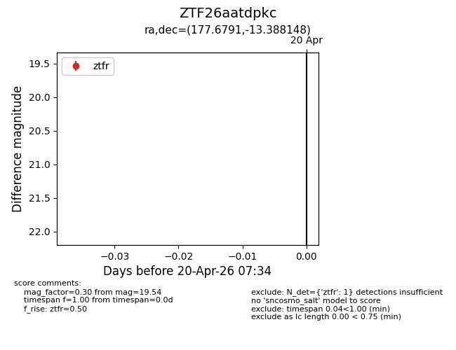
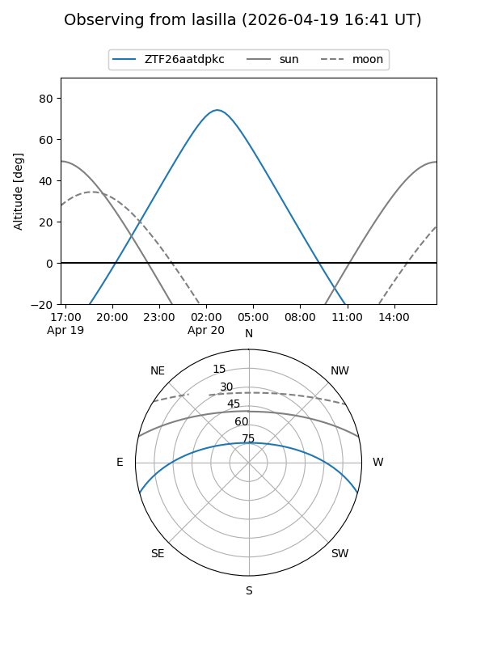
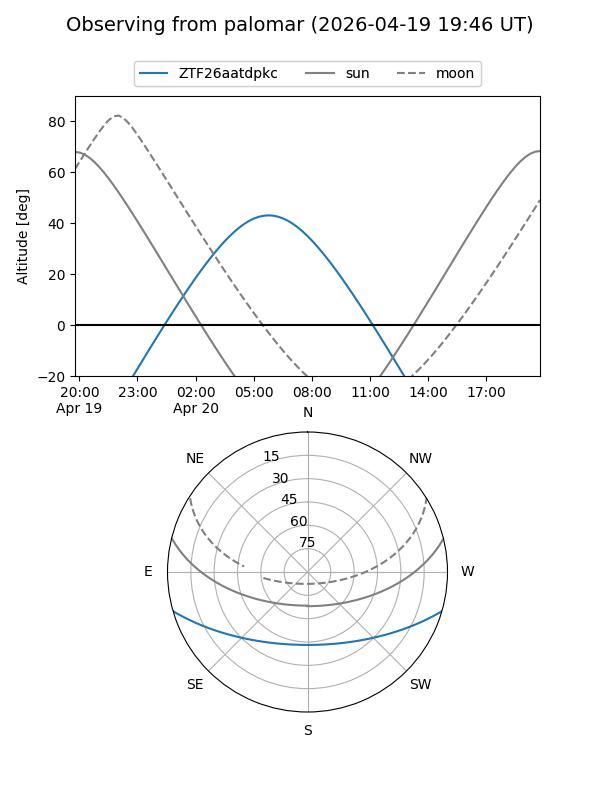

ZTF26aatdpkc
Target ZTF26aatdpkc at 2026-04-20 07:46
Aliases and brokers:
FINK: link
Lasair: link
ALeRCE: link
alt names
ZTF26aatdpkc (ztf,fink_ztf)
Coordinates:
equatorial (ra, dec) = 177.6791,-13.38815
equatorial (HMS+DMS) = 11:50:42.98,-13:23:17.33
galactic (l, b) = (281.0474,+46.88713)
Flags:
Photometry:
last ztfr=19.54
1 ztfr detections
Lightcurve

Visibility


Additional plots